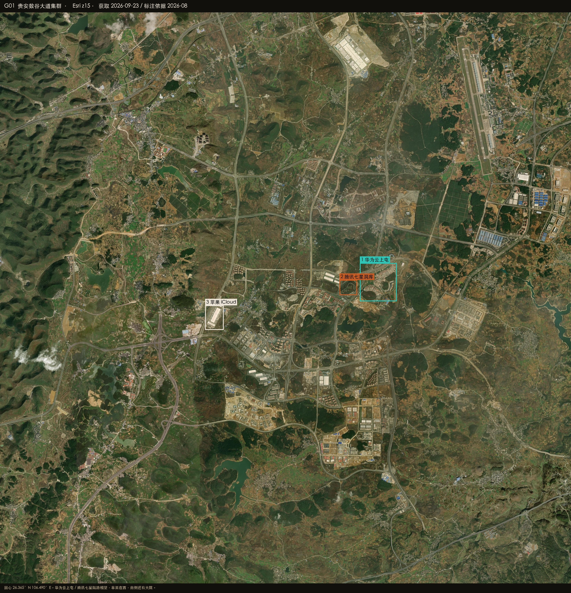
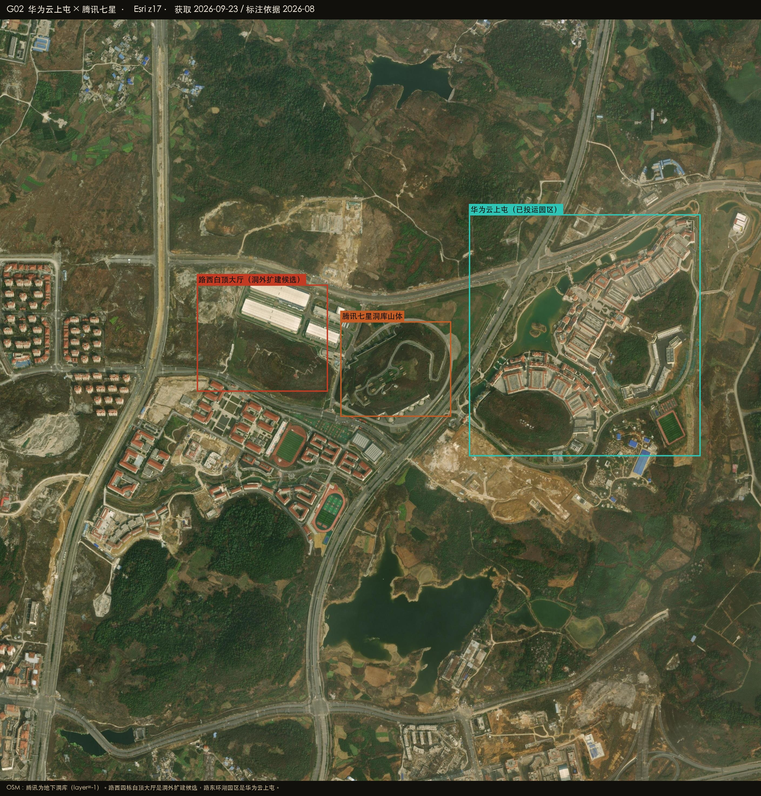
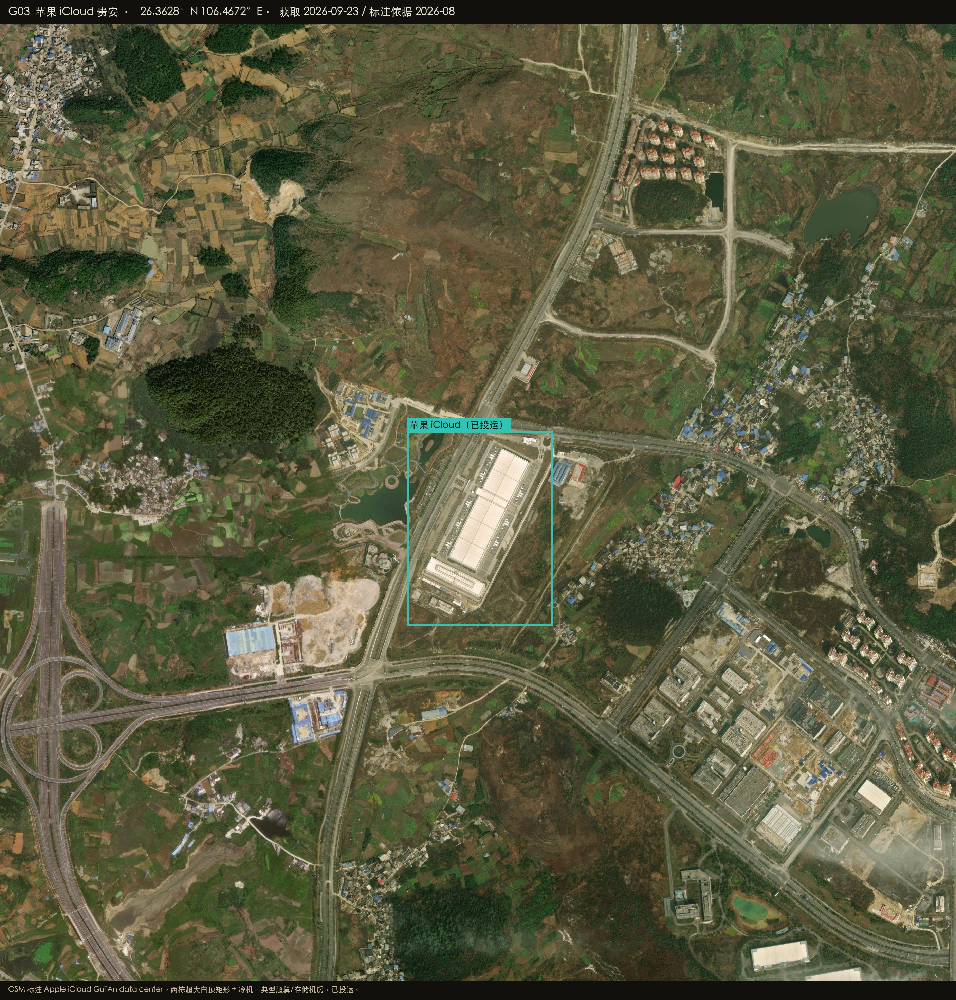

Datacenter Probe · 贵安
26.3680°N 106.4900°E · r = 50 km
Esri World Imagery · 2026-08-27
Satellite reconnaissance · Guizhou
贵安周边数据中心建设情况
智东西写「南贵北乌」，南贵就是贵安。能具名的机房收在数谷大道一条东西向走廊里：东端华为云上屯和腾讯七星隔路相望，西端是苹果 iCloud 两栋超大白顶矩形。腾讯主体在山体地下，地面只看得见洞库山丘和路西四栋大厅。走廊之外还有几处大白顶厂房，本次没有名称对应，不计入。

HERO · 数谷大道 · 1 华为云上屯 / 2 腾讯七星 / 3 苹果 iCloud
在建 / 高置信机房
已投运 / OSM 具名
候选 / 业主待核
排除或不像机房
底图 Esri World Imagery（WGS84）
G-HUAWEI · 已投运园区
环湖红顶园区，OSM 名称云上屯华为。园区本身是办公形态，机房楼未逐栋分出。
高置信 · 已投运
G-TENCENT · 地下洞库
OSM 标 layer=-1。卫星只见环路围着的山体和山脚一排圆罐；路西四栋白顶大厅是洞外候选。
高 · 洞库
G-APPLE · 两栋大厅
OSM 具名。两栋并排超大白顶矩形，屋顶冷机成排，已投运。
高置信 · 已投运
G-SOUTH · 南侧混杂
地面厂房和在建区混在一起，隧道机房从上面看不见。
中 · 混杂
26.3708°N 106.5082°E
华为云上屯
金马 / 数谷大道东端。公开报道里的七星湖园区，人工湖加红顶楼，不像普通仓储。
高置信 · 已投运园区
- OSM：云上屯华为，landuse=commercial
- 环湖低层红顶组团、人工湖，与报道的园区形态相符；没有超大白顶，机房楼不能从园区里单独指认
- 马场 AZ3（兴安大道×金普路，2026 招标）本次图层未见典型超大机房
华为云七星湖云上屯
在 Google 卫星图打开 ↗

PLATE G02 · 华为 × 腾讯 · Esri z17
26.3696°N 106.5007°E
腾讯七星洞库
栖凤坡。OSM 把这座山标成腾讯贵安七星数据中心，building=yes 且 layer=-1，是洞库而不是地面大厅。
高置信 · 地下
- 卫星：环路围着的独立山丘，山脚一排圆罐（冷却/储水）
- 路西四栋白顶大厅可能是洞外扩建，业主待核
腾讯
在 Google 卫星图打开 ↗
PLATE G02 · 洞库山体 · 26.3696°N 106.5007°E
26.3628°N 106.4672°E
苹果 iCloud
黔中 / 兴安大道一带。OSM 直接写 Apple iCloud Gui'An data center，和两栋超大白顶矩形对得上。
高置信 · 已投运
- 两栋并排、屋顶冷机成排，是走廊里最典型的超大型机房形态
- 2021 年报道建成投运，影像符合
苹果云上贵州
在 Google 卫星图打开 ↗

PLATE G03 · 苹果 iCloud · 已投运
26.3500°N 106.4774°E
南侧大院
富士康工业用地在此。绿色隧道数据中心在山里，地面影像不能当成机房。三大运营商信息园报道也在这条走廊，OSM 未逐栋标注。
中置信 · 混杂
- 不要把普通厂房算作 IDC
- 走廊北侧约 26.42°N 106.50°E 另有一处大白顶厂房，无名称对应，未计入
- 华为 AZ3 马场续建需更新图层再查
富士康？电信/移动/联通？
在 Google 卫星图打开 ↗
PLATE G01 · 走廊总图 · 南侧大院在苹果东南
怎么判，什么不算
Esri World Imagery 对照 OSM 具名要素。腾讯是洞库，判据改成山体 + 洞外方仓，不能要求看见常规大厅。
算作机房
- 超大无内院矩形、屋顶冷机
- OSM telecom=data_center 或品牌名
- 洞库：layer=-1 的山体 + 洞外大厅
明确排除
在 Google 卫星图打开圆心 ↗